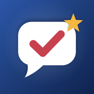

CitizenReady
Practice the US citizenship test and interview: all 128 civics questions, mock interviews read aloud, N-400 practice and explanations in English and Spanish.
Support
Questions, problems or ideas? Email us at kemalt20@gmail.com. We usually reply within two business days.
Common questions
How do I restore my purchase?
Open the app, go to Settings and tap Restore purchases. Use the same Apple Account you bought with.
How do I cancel my subscription?
On your iPhone, open Settings, tap your name, then Subscriptions, and choose CitizenReady.
Which test should I study?
If you filed Form N-400 on or after October 20, 2025, study the 2025 test. If you filed before that date, study the 2008 test. You can switch in the app's Settings.
Why is an answer about my state or an officeholder different?
Some answers change with elections. Always check uscis.gov/citizenship/testupdates before your interview.
Legal
Privacy Policy · Política de privacidad · Terms of Use
CitizenReady is not affiliated with, endorsed by or connected to USCIS or any government agency.